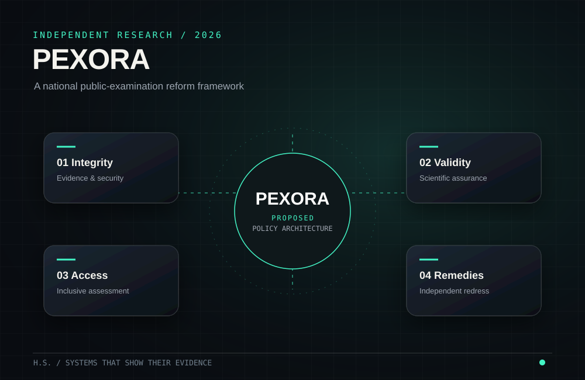

← Selected work
Public examination policy · Candidate rights · Institutional design
PEXORA
A citizen-authored national architecture for fair, secure, scientifically defensible and candidate-centred public examinations.
Evidence status: Citizen-authored draft; documentary forwarding confirmed. Not adopted, certified, enacted or funded by any public authority.

The question
behind the work.
A public examination can be secure and still measure the wrong thing; scientifically sound and still inaccessible; or procedurally fair on paper and still fail to remedy harm in time. PEXORA begins with that systems-level problem.
What the proposal contains
The source package is an approximately 870-page, citizen-authored constitutional, legislative, regulatory and implementation proposal. It contains a proposed constitutional amendment, principal oversight legislation, national examination framework, rules, regulations and scientific-assurance structure.
It is a research and legislative-drafting exercise. The legal design requires specialist constitutional, fiscal, scientific and administrative scrutiny before it could be treated as actionable law.
The architecture
Institutional correspondence
The proposal was submitted through public channels in 2026. The Rajya Sabha Secretariat forwarded a representation to the Department of Higher Education on 27 August 2026; the Legislative Department also forwarded it to DoPT and the Ministry of Education. A separate RTI transfer in November 2026 seeks records of the handling process.
These are documentary routing events, not substantive endorsements, acceptance decisions, scientific validation or evidence that any provision has been implemented.
What remains unresolved
Independent peer review by legal scholars, public-examination psychometricians, accessibility specialists, security experts and public administrators is needed. Institutional feasibility, federal powers, costs, legislative drafting and piloting remain open questions.
The project is presented to demonstrate original policy architecture, disciplined scope management and willingness to expose a proposal to critique—not to imply governmental sponsorship.
A referral establishes a route for correspondence. It does not establish endorsement.
Inside the proposal
Alongside the 15-page Executive Legislative Brief, the longer package explores an independent scientific-assurance mechanism, candidate-rights ombudsman, appeals architecture, a transparency portal, and safeguards for vendors, accessibility, secure response custody and the use of automation.
It also outlines a federal implementation route, protected pilots, budget and capacity review, and conditions under which an intervention should not proceed. These remain citizen-authored recommendations subject to legal, administrative, psychometric and fiscal review.